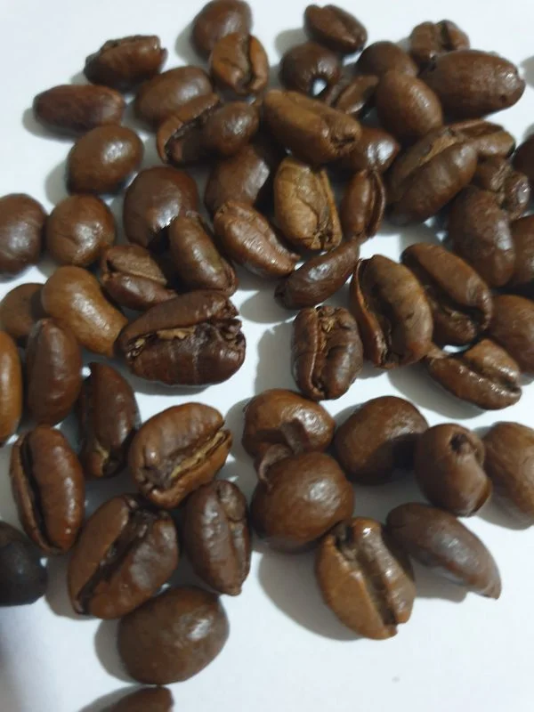

Liberica
Liberica coffee beans are a rare treat. They’re grown in very specific climates with production being far too scarce for farmers to scale their operations to truly satisfy a global marketplace. Even still, the beans are considered a pleasant surprise. Many who’ve tried the coffee liken the aroma to fruit and flowers and describe the flavor as having a somewhat “woody” taste.
There was a time when Liberica coffee was incredibly popular. Near the end of the nineteenth century, a plant disease now known as “coffee rust” had set in and eliminated almost all of the Arabica plants across the entire planet. Because coffee was such a huge commodity, even at that point, farmers and government bodies both set out to find suitable substitutes. The Philippines were the first to harvest and sell the Liberica plant at a noteworthy volume and as the sole supplier the nation saw its economy grow tremendously. At this point, the Philippines was a U.S. territory but as its economy grew the nation declared its independence. As a result, the U.S. imposed steep economic sanctions and cut off supplies to the country. This ultimately led to the downfall of the Liberica coffee bean in the global marketplace, as no other nations were ever able to step up and match the production that the Philippines had once pioneered. (District Roasters website)